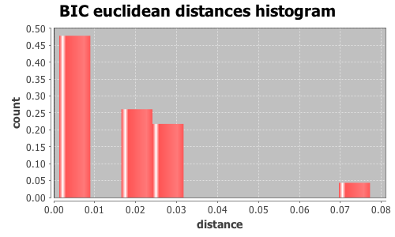

Application Meta
jModeltest 2.1
(c) 2011-onwards D. Darriba, G.L. Taboada, R. Doallo and D. Posada,(1) Department of Biochemistry, Genetics and Immunology
University of Vigo, 36310 Vigo, Spain.
(2) Department of Electronics and Systems
University of A Coruna, 15071 A Coruna, Spain.
e-mail: ddarriba@udc.es, dposada@uvigo.es
Wed Aug 26 16:45:39 EDT 2015
Mac OS X 10.10.5, arch: x86_64, bits: 64, numcores: 4
| Citation: | Darriba D, Taboada GL, Doallo R and Posada D. 2012. "jModelTest 2: more models, new heuristics and parallel computing". Nature Methods 9, 772. |
 Back to top
Back to top Settings
Arguments = -d group3/group3.txt.gene_271.phy -s 3 -i -g 4 -f -BIC -tr 7 -o group3out/g3outgene_271.txtInput Alignment: "group3/group3.txt.gene_271.phy"
NumTaxa = 17
Length = 1,558
Phyml version = 3.0
Phyml binary = PhyML_3.0_macOS_i386
Candidate models = 24
number of substitution schemes = 3
including models with equal/unequal base frequencies (+F)
including models with/without a proportion of invariable sites (+I)
including models with/without rate variation among sites (+G) (nCat = 4)
Optimized free parameters (K) = Substitution parameters + 31 branch lengths + topology
Base tree for likelihood calculations = Maximum Likelihood
Tree topology search operation = NNI
Model Optimization Results
| ID | Name | Partition | -lnL | p | fA | fC | fG | fT | ti/tv | R(a) | R(b) | R(c) | R(d) | R(e) | R(f) | p-inv | shape |
|---|---|---|---|---|---|---|---|---|---|---|---|---|---|---|---|---|---|
| 1 | JC | 000000 | 4050.4016 | 32 | - | - | - | - | - | - | - | - | - | - | - | - | - |
| 2 | JC+I | 000000 | 3956.8947 | 33 | - | - | - | - | - | - | - | - | - | - | - | 0.8030 | - |
| 3 | JC+G | 000000 | 3960.3695 | 33 | - | - | - | - | - | - | - | - | - | - | - | - | 0.0210 |
| 4 | JC+I+G | 000000 | 3953.3871 | 34 | - | - | - | - | - | - | - | - | - | - | - | 0.6370 | 0.6430 |
| 5 | F81 | 000000 | 4047.8879 | 35 | 0.2627 | 0.2530 | 0.2559 | 0.2284 | - | - | - | - | - | - | - | - | - |
| 6 | F81+I | 000000 | 3953.6959 | 36 | 0.2609 | 0.2546 | 0.2594 | 0.2251 | - | - | - | - | - | - | - | 0.8040 | - |
| 7 | F81+G | 000000 | 3957.3463 | 36 | 0.2613 | 0.2542 | 0.2586 | 0.2259 | - | - | - | - | - | - | - | - | 0.0210 |
| 8 | F81+I+G | 000000 | 3950.1170 | 37 | 0.2610 | 0.2542 | 0.2599 | 0.2249 | - | - | - | - | - | - | - | 0.6400 | 0.6430 |
| 9 | K80 | 010010 | 3934.8438 | 33 | - | - | - | - | 3.5191 | - | - | - | - | - | - | - | - |
| 10 | K80+I | 010010 | 3831.1155 | 34 | - | - | - | - | 4.1331 | - | - | - | - | - | - | 0.8110 | - |
| 11 | K80+G | 010010 | 3836.0347 | 34 | - | - | - | - | 4.0137 | - | - | - | - | - | - | - | 0.0210 |
| 12 | K80+I+G | 010010 | 3826.0156 | 35 | - | - | - | - | 4.2234 | - | - | - | - | - | - | 0.6660 | 0.6600 |
| 13 | HKY | 010010 | 3932.1365 | 36 | 0.2620 | 0.2551 | 0.2556 | 0.2273 | 3.5303 | - | - | - | - | - | - | - | - |
| 14 | HKY+I | 010010 | 3826.8872 | 37 | 0.2548 | 0.2633 | 0.2608 | 0.2212 | 4.2004 | - | - | - | - | - | - | 0.8140 | - |
| 15 | HKY+G | 010010 | 3832.3560 | 37 | 0.2570 | 0.2610 | 0.2592 | 0.2228 | 4.0517 | - | - | - | - | - | - | - | 0.0210 |
| 16 | HKY+I+G | 010010 | 3821.8085 | 38 | 0.2540 | 0.2636 | 0.2612 | 0.2212 | 4.2959 | - | - | - | - | - | - | 0.6680 | 0.6410 |
| 17 | SYM | 012345 | 3922.8883 | 37 | - | - | - | - | - | 0.8378 | 10.0097 | 1.0129 | 1.6649 | 6.5596 | 1.0000 | - | - |
| 18 | SYM+I | 012345 | 3825.7298 | 38 | - | - | - | - | - | 0.8746 | 12.8161 | 1.5946 | 1.5290 | 7.8793 | 1.0000 | 0.8080 | - |
| 19 | SYM+G | 012345 | 3830.1613 | 38 | - | - | - | - | - | 0.8658 | 12.2187 | 1.3947 | 1.5448 | 7.3545 | 1.0000 | - | 0.0210 |
| 20 | SYM+I+G | 012345 | 3820.9416 | 39 | - | - | - | - | - | 0.8451 | 12.9373 | 1.5845 | 1.4816 | 7.8198 | 1.0000 | 0.6550 | 0.6260 |
| 21 | GTR | 012345 | 3926.9312 | 40 | 0.2582 | 0.2592 | 0.2490 | 0.2336 | - | 0.8423 | 9.3591 | 0.9947 | 1.6509 | 6.5128 | 1.0000 | - | - |
| 22 | GTR+I | 012345 | 3822.7861 | 41 | 0.2496 | 0.2665 | 0.2573 | 0.2266 | - | 0.7891 | 11.8901 | 1.6439 | 1.3447 | 7.8296 | 1.0000 | 0.8110 | - |
| 23 | GTR+G | 012345 | 3827.8378 | 41 | 0.2519 | 0.2646 | 0.2546 | 0.2289 | - | 0.7837 | 11.3502 | 1.3986 | 1.3881 | 7.2195 | 1.0000 | - | 0.0210 |
| 24 | GTR+I+G | 012345 | 3817.8273 | 42 | 0.2489 | 0.2672 | 0.2579 | 0.2259 | - | 0.7523 | 11.9752 | 1.6367 | 1.2834 | 7.7429 | 1.0000 | 0.6620 | 0.6170 |
There are 3 different topologies. The following table shows the models supporting each topology and the rank according to each Information Criterion, as well as Robinson-Foulds and Euclidean distances with the tree of the best-fit model.
| ID | Models | Topology | AIC | BIC | AICc | DT | |
|---|---|---|---|---|---|---|---|
| 0 |
K80+I K80+G K80+I+G HKY+I HKY+G HKY+I+G SYM+I SYM+G SYM+I+G GTR+I GTR+G GTR+I+G
|
RANK | - | 0 | - | - | |
| Weight | - | 1.0000 | - | - | |||
| RF | - | 0 | - | - | |||
| AVG Distance | - | 3.3245e-03 | - | - | |||
| Distance VAR | - | 2.7951e-06 | - | - | |||
| 1 |
SYM
|
RANK | - | 1 | - | - | |
| Weight | - | 0.0000 | - | - | |||
| RF | - | 4 | - | - | |||
| AVG Distance | - | 7.7228e-02 | - | - | |||
| Distance VAR | - | 0.0000e+00 | - | - | |||
| 2 |
JC JC+I JC+G JC+I+G F81 F81+I F81+G F81+I+G K80 HKY GTR
|
RANK | - | 2 | - | - | |
| Weight | - | 0.0000 | - | - | |||
| RF | - | 6 | - | - | |||
| AVG Distance | - | 2.4809e-02 | - | - | |||
| Distance VAR | - | 1.6912e-05 | - | - |
BIC Selection Results
Model selected
| Model | K80+I+G | ||
|---|---|---|---|
| partition | 010010 | ||
| -lnL | 3826.0156 | ||
| K | 35 | ||
| freqA | - | R(a) | - |
| freqC | - | R(b) | - |
| freqG | - | R(c) | - |
| freqT | - | R(d) | - |
| ti/tv | 4.2234 | R(e) | - |
| R(f) | - | ||
| p-inv | 0.6660 | gamma | 0.6600 |
Best model tree
(((((((((((I0076:0.00263727,I0158:0.01957141):0.00141960,I0111:0.07013881):0.00058181,I0075:0.00739579):0.00155545,I0150:0.00487634):0.00069549,I0152:0.00691471):0.00180846,I0148:0.00753585):0.00193684,(I0151:0.00543451,I0149:0.00538743):0.00138611):0.00226885,I0119:0.01177708):0.00079359,I0144:0.00501416):0.00997446,(((I0067:0.00713494,I0068:0.00822699):0.00332188,I0141:0.00530857):0.00181974,I0147:0.01364890):0.00134757):0.00357615,I0135:0.00293809,I0127:0.00446730);
Display best model tree in PhyloWidget
| Model | -lnL | K | BIC | delta | weight | cumWeight |
|---|---|---|---|---|---|---|
| K80+I+G | 3826.0156 | 35 | 7909.3217 | 0.0000 | 0.8039 | 0.8039 |
| K80+I | 3831.1155 | 34 | 7912.1703 | 2.8486 | 0.1935 | 0.9974 |
| K80+G | 3836.0347 | 34 | 7922.0088 | 12.6870 | 0.0014 | 0.9988 |
| HKY+I+G | 3821.8085 | 38 | 7922.9609 | 13.6392 | 0.0009 | 0.9997 |
| HKY+I | 3826.8872 | 37 | 7925.7672 | 16.4455 | 0.0002 | 0.9999 |
| SYM+I+G | 3820.9416 | 39 | 7928.5784 | 19.2566 | 0.0001 | 1.0000 |
| SYM+I | 3825.7298 | 38 | 7930.8037 | 21.4819 | 0.0000 | 1.0000 |
| HKY+G | 3832.3560 | 37 | 7936.7048 | 27.3830 | 0.0000 | 1.0000 |
| SYM+G | 3830.1613 | 38 | 7939.6667 | 30.3449 | 0.0000 | 1.0000 |
| GTR+I+G | 3817.8273 | 42 | 7944.4033 | 35.0816 | 0.0000 | 1.0000 |
| GTR+I | 3822.7861 | 41 | 7946.9697 | 37.6480 | 0.0000 | 1.0000 |
| GTR+G | 3827.8378 | 41 | 7957.0731 | 47.7514 | 0.0000 | 1.0000 |
| K80 | 3934.8438 | 33 | 8112.2757 | 202.9540 | 0.0000 | 1.0000 |
| SYM | 3922.8883 | 37 | 8117.7695 | 208.4478 | 0.0000 | 1.0000 |
| HKY | 3932.1365 | 36 | 8128.9147 | 219.5930 | 0.0000 | 1.0000 |
| GTR | 3926.9312 | 40 | 8147.9086 | 238.5869 | 0.0000 | 1.0000 |
| JC+I | 3956.8947 | 33 | 8156.3776 | 247.0559 | 0.0000 | 1.0000 |
| JC+I+G | 3953.3871 | 34 | 8156.7136 | 247.3918 | 0.0000 | 1.0000 |
| JC+G | 3960.3695 | 33 | 8163.3272 | 254.0055 | 0.0000 | 1.0000 |
| F81+I | 3953.6959 | 36 | 8172.0334 | 262.7117 | 0.0000 | 1.0000 |
| F81+I+G | 3950.1170 | 37 | 8172.2269 | 262.9052 | 0.0000 | 1.0000 |
| F81+G | 3957.3463 | 36 | 8179.3342 | 270.0125 | 0.0000 | 1.0000 |
| JC | 4050.4016 | 32 | 8336.0402 | 426.7185 | 0.0000 | 1.0000 |
| F81 | 4047.8879 | 35 | 8353.0663 | 443.7445 | 0.0000 | 1.0000 |
| -lnL: | negative log likelihod |
| K: | number of estimated parameters |
| BIC: | Bayesian Information Criterion |
| delta: | BIC difference |
| weight: | BIC weight |
| cumWeight: | cumulative BIC weight |
Confidence interval
There are 24 models in the 100.00% confidence interval:
K80+I+G K80+I K80+G HKY+I+G HKY+I SYM+I+G SYM+I HKY+G SYM+G GTR+I+G GTR+I GTR+G K80 SYM HKY GTR JC+I JC+I+G JC+G F81+I F81+I+G F81+G JC F81

Euclidean distances histogram from each model optimized tree to K80+I+G tree.
Euclidean distances histogram from each model optimized tree to K80+I+G tree.
Robinson-Foulds distances histogram from the different topologies to K80+I+G topology.